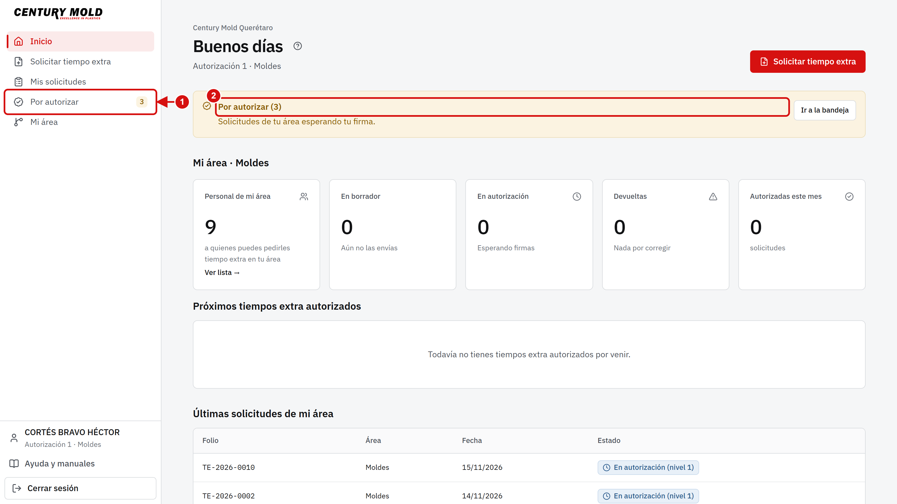
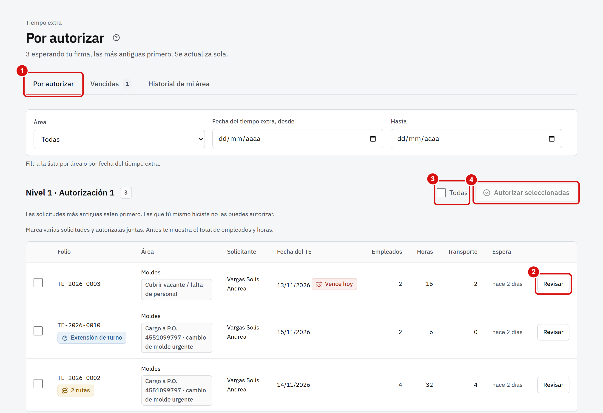
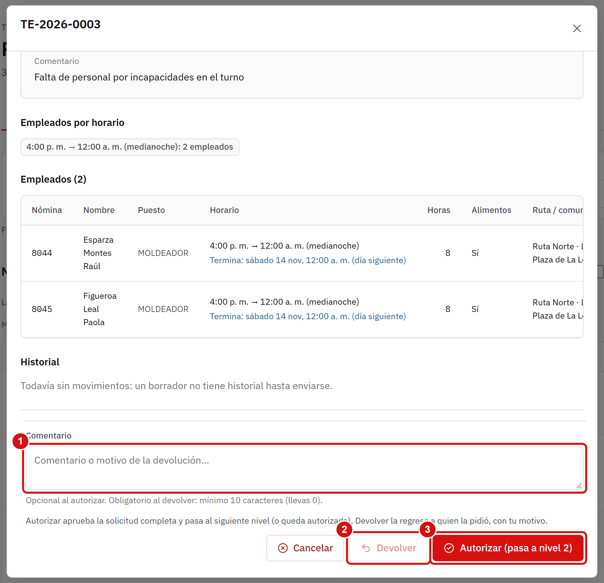
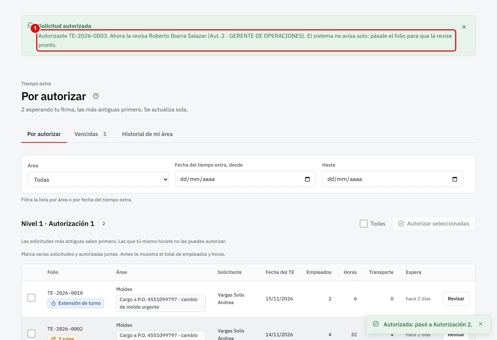
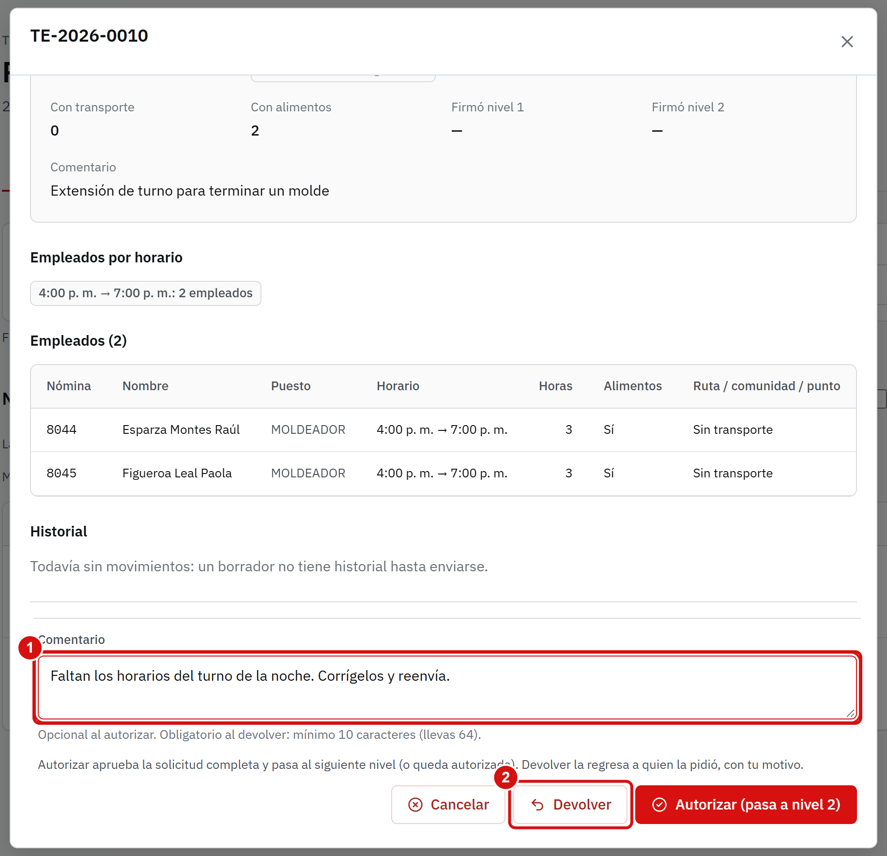
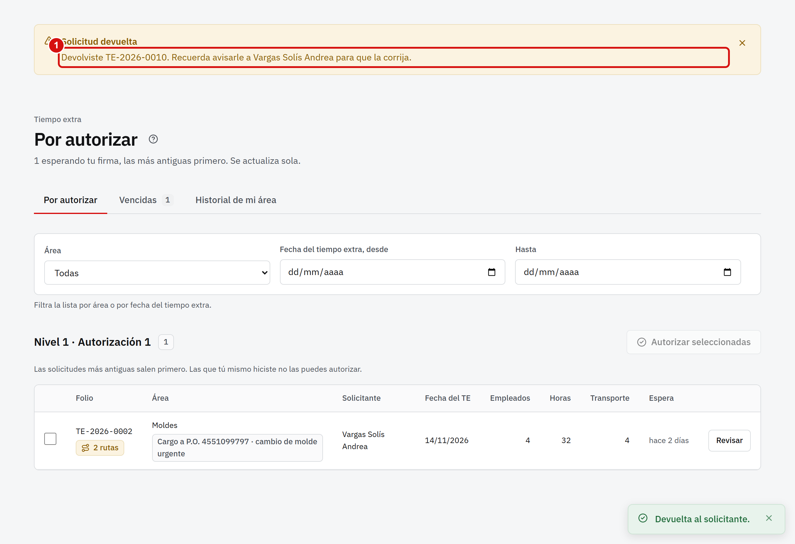
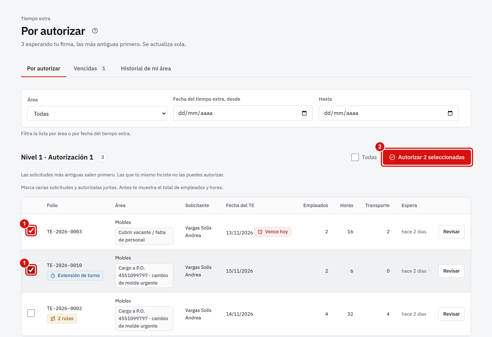
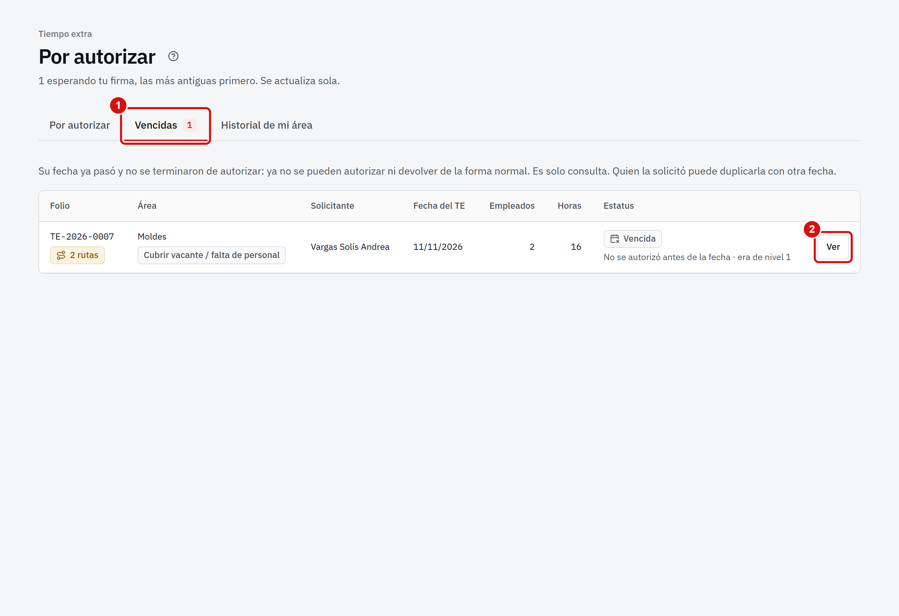
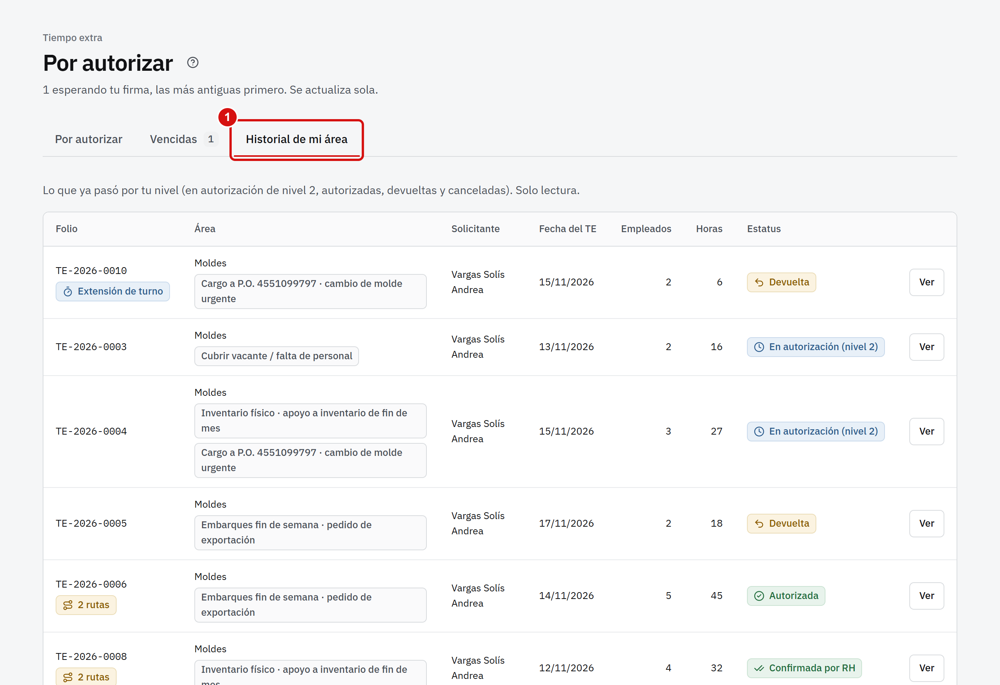
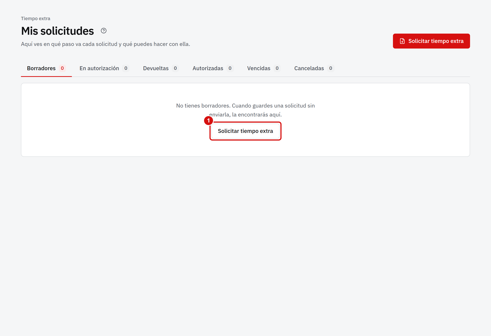

El Portal de procesos es el sistema de Century Mold para pedir tiempo extra y transporte. Tú eres el primer nivel de autorización de tu área: ves lo que pide tu gente y decides si se autoriza o se devuelve.
Así camina una solicitud:
Quien la pide (solicitante de tu área) la captura y la envía.
Tú (Autorización 1) la revisas y la autorizas o la devuelves.
Autorización 2 da la segunda firma.
Recursos Humanos la confirma y pide el transporte al proveedor.
El sistema no manda correos ni mensajes. Después de firmar o devolver, avísale tú a la persona que sigue.
No puedes autorizar lo que tú mismo capturaste. Si tú pides tiempo extra, tu solicitud va directo a Autorización 2.
2. Primeros pasos
Entrar al portal
Abre https://centurymold-qro.web.app en tu navegador (Chrome, Edge o el de tu celular).
Escribe tu número de nómina.
Escribe tu contraseña. El ojito sirve para ver lo que escribes.
Toca Iniciar sesión.
Si no la recuerdas, toca ¿Olvidaste tu contraseña?.
La primera vez, el portal te pide crear una contraseña nueva (mínimo 8 caracteres, con letras y números). Las contraseñas solo se restablecen en persona, con Sistemas o Recursos Humanos y tu identificación.
Tu pantalla de inicio

En el menú de la izquierda, Por autorizar muestra cuántas solicitudes esperan tu firma.
En el inicio ves un resumen de lo pendiente y lo que viene en los próximos días.
En el pie del menú está Ayuda y manuales, con este manual y su guía rápida en PDF, y Cerrar sesión. En una computadora compartida, cierra tu sesión al terminar.
3. Revisar y autorizar una solicitud
Entra a Por autorizar. Las solicitudes más antiguas salen primero y las que vencen hoy lo dicen.

La pestaña Por autorizar muestra lo que espera tu firma. Vencidas e Historial de mi área están a un lado.
Toca Revisar en la solicitud que quieras ver.
Con Todas marcas todas las casillas; con Autorizar seleccionadas las firmas juntas (más abajo).
Al tocar Revisar se abre la solicitud completa: fecha, motivos, cada empleado con su horario y su ruta, y el historial. Léela antes de decidir. Si usa más de una ruta, revisa la justificación: cada ruta extra cuesta.

Si quieres, escribe un comentario (al autorizar es opcional).
Toca Devolver si hay algo que corregir (más abajo).
Toca Autorizar. La solicitud pasa a Autorización 2.
Al autorizar, la pantalla confirma y te recuerda a quién avisarle.

Lee el aviso: dice qué solicitud autorizaste y quién la revisa ahora.
Si otra persona respondió la misma solicitud mientras la tenías abierta, el portal te avisa («Alguien más ya respondió esta solicitud»): no se firma dos veces.
4. Devolver una solicitud
Si algo está mal (horarios, empleados, motivo, rutas), no la autorices: devuélvela con una explicación clara.

Abre la solicitud con Revisar.
Escribe en Comentario qué debe corregir quien la pidió. Es obligatorio y lleva mínimo 10 letras.
Toca Devolver.

El aviso confirma la devolución. Avísale a la persona para que la corrija: el portal no lo hace.
La persona la corrige y la reenvía; vuelve a empezar en tu bandeja con el mismo folio.
5. Autorizar varias a la vez
Cuando varias solicitudes están bien, no hace falta abrir una por una.

Marca la casilla de cada solicitud (o Todas).
Toca Autorizar seleccionadas. El portal te muestra el total de empleados y horas antes de firmar.
Cada solicitud se firma por separado. Si alguna ya la había respondido otra persona, esa se salta y el resultado te dice cuáles sí se autorizaron.
6. Vencidas e historial de tu área

Vencidas: la fecha del tiempo extra ya pasó sin autorizarse. Tú ya no las puedes firmar ni devolver; solo Autorización 2 puede autorizarlas fuera de tiempo.

Historial de mi área: todo lo que ya salió de tu bandeja (autorizado, devuelto, cancelado o confirmado) para consultarlo.
7. Si tú también pides tiempo extra
Tú también puedes capturar tiempo extra de tu área. Se hace igual que en el manual del Solicitante, con una diferencia:

Toca Solicitar tiempo extra en Mis solicitudes.
Lo que tú capturas se salta tu propio nivel: pasa directo a Autorización 2 (tú no te autorizas). Si hay que corregir algo, te lo devuelve Autorización 2.
8. Preguntas frecuentes
No veo una solicitud de mi gente.Solo ves lo de tu área y lo que ya fue enviado (un borrador solo lo ve quien lo está armando). Si te falta un permiso, pídelo a Recursos Humanos o a Autorización 2.
Quiero deshacer una firma.No se puede deshacer. Si ya autorizaste algo por error, avisa a Autorización 2 o a Recursos Humanos: ellos pueden devolverla o cancelarla con un motivo.
¿Puedo autorizar cuando estoy de vacaciones?Tu permiso tiene fechas. Si vas a faltar, pide a Recursos Humanos o a Autorización 2 que asignen a tu suplente en su lugar.
Se cerró mi sesión.Por seguridad se cierra a los 30 minutos sin usar. Entra de nuevo; no se pierde lo ya firmado.
Olvidé mi contraseña.Solo se restablece en persona con Sistemas o Recursos Humanos y tu identificación. Nunca la des por teléfono ni por mensaje.